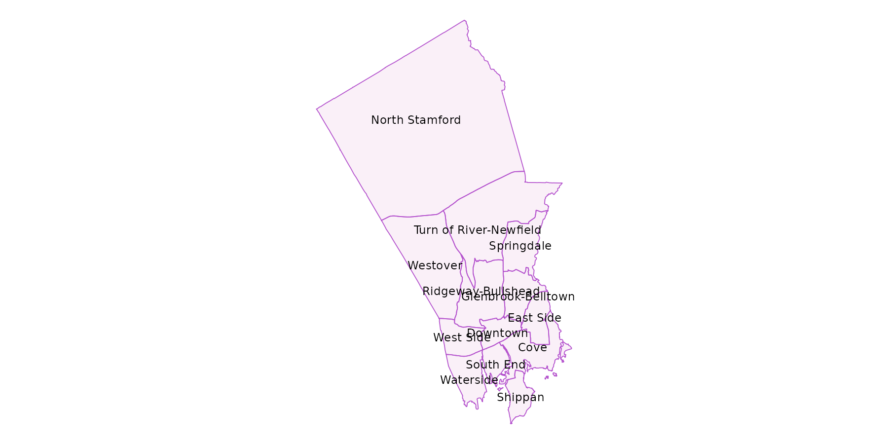
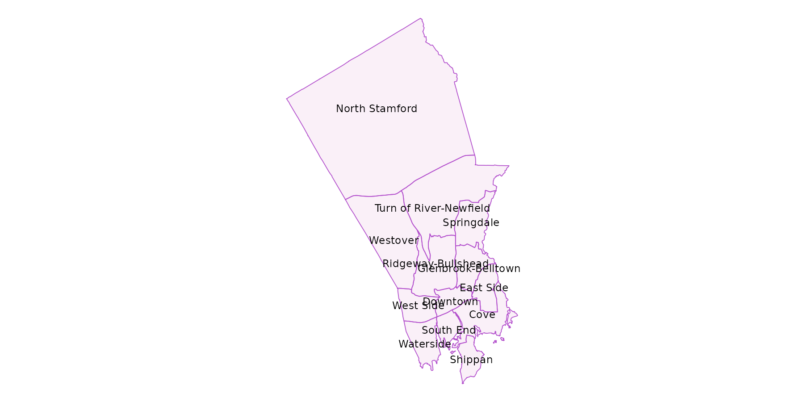
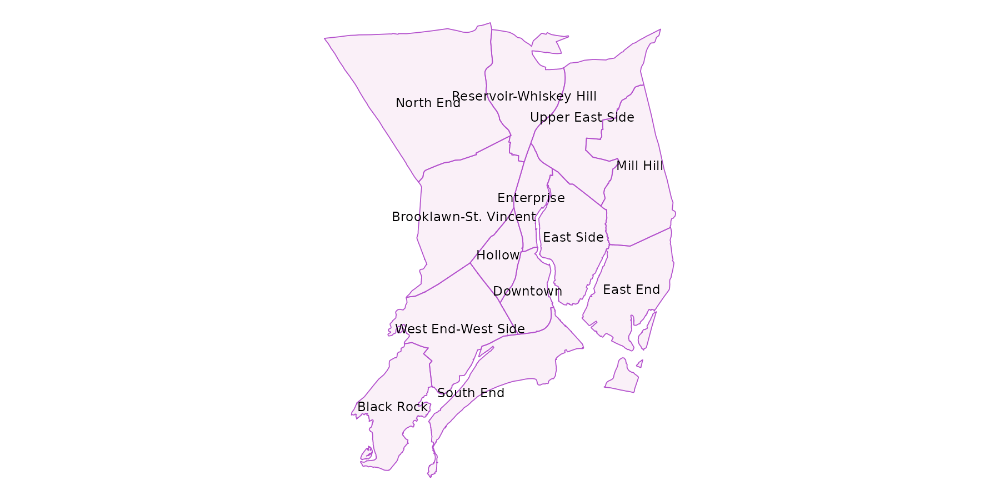
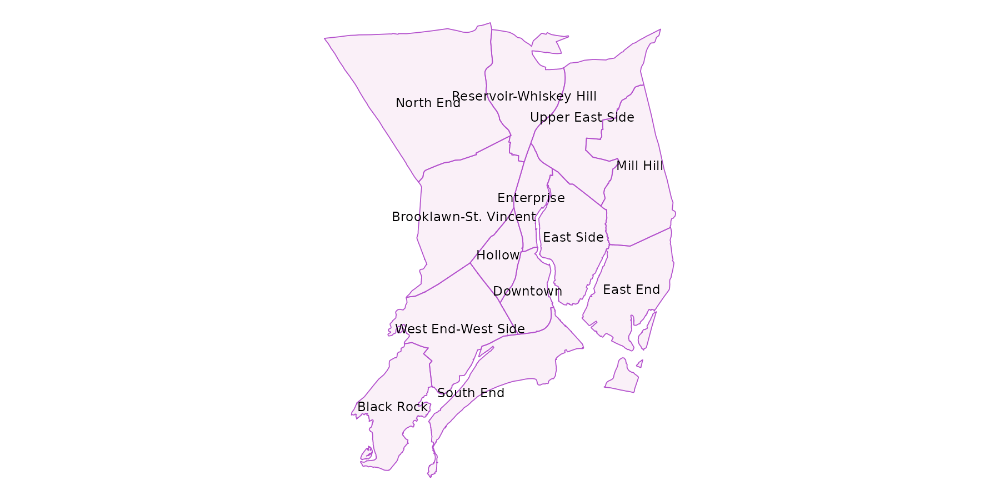

cwi ships with several shapefiles in sf (simple features) format. These include:
- Shapes straight from TIGER via
tigris:town_sftract_sf
- Shapes put together at DataHaven based on official city neighborhood boundaries:
bridgeport_sfhartford_sfnew_haven_sfstamford_sf
sf
sf objects are easy to plot either out of the box with sf::plot.sf(), or with ggplot2::ggplot() as of ggplot2 version 3.0.0. Use with ggplot() means a geom_sf() can be overlayed on a basemap from ggmap, as is done in the neighborhood examples.
sf is well-documented, and uses dplyr-type functions to allow for mutating, filtering, summarizing, joining, and most other data wrangling functions. See the sf vignettes for help getting started: vignette(package = "sf").
sf data frames look and act like other data frames, but with shape information attached.
Statewide
A basic plot of cwi::town_sf, with some ggplot aesthetics set, graticule lines turned off with coord_sf(ndiscr = F), and a blank theme.
ggplot(town_sf) +
geom_sf(fill = "gray70", color = "white", size = 0.5) +
coord_sf(ndiscr = FALSE) +
theme_void() +
ggtitle("Connecticut towns")
With some dplyr operations. For example, group_by() followed by summarise() conducts a union on each group’s geometries, using sf::st_union() in its back-end.
town_sf %>%
filter(name %in% regions[["Greater New Haven"]]) %>%
group_by(area = ifelse(name == "New Haven", "New Haven", "New Haven suburbs")) %>%
summarise() %>%
ggplot() +
geom_sf(aes(fill = area), color = "white") +
coord_sf(ndiscr = FALSE) +
scale_fill_manual(values = c("New Haven" = "mediumorchid", "New Haven suburbs" = "gray70")) +
theme_void() +
theme(legend.position = "bottom") +
ggtitle("Filtering and unioning shapes")
#> `summarise()` ungrouping output (override with `.groups` argument)
cwi::tract_sf, a fairly large shape containing all tracts in the state.
ggplot(tract_sf) +
geom_sf(fill = "gray70", color = "white", size = 0.1) +
coord_sf(ndiscr = FALSE) +
theme_void() +
ggtitle("Connecticut tracts")
Neighborhoods
Neighborhood shapes were made at DataHaven by splitting or grouping census tracts into neighborhood areas as defined by each city’s government. In some cases, boundaries were slightly adjusted to fit tracts. Small neighborhoods may be grouped together for analysis. See documentation of these at cwi::neighborhood_shapes and crosswalk of tracts to neighborhoods at cwi::neighborhood_tracts.
list("New Haven" = new_haven_sf, Stamford = stamford_sf,
"Hartford/West Hartford" = hartford_sf, Bridgeport = bridgeport_sf) %>%
purrr::iwalk(function(shp, title) {
p <- ggplot(shp) +
geom_sf(color = "mediumorchid3", fill = "orchid3", alpha = 0.1) +
geom_sf_text(aes(label = name), size = 2.8) +
coord_sf(ndiscr = FALSE) +
theme_void()
print(p)
}) 
 
